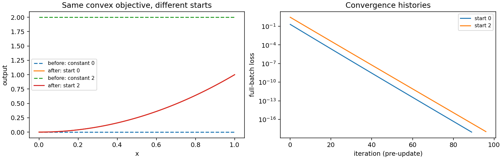

Explicit initial models
Which operations need a starting point?
Use an initial model when minimizing a differentiable objective, such as the scalarized objectives of a multiobjective optimization problem. Its coefficients provide the first iterate. For a nonconvex loss, different starts can lead to different local solutions; for a convex problem they can still change how many updates are needed to reach the same tolerance.
Least-squares regression is different. fit(space, samples) directly solves
the specified linear problem and has no initial-model argument. Its geometry,
observations, penalties and fixed constraints completely define the solve.
Passing an initial guess cannot improve its convergence. If you know an exact
endpoint value, use Fixed controls; if a fit oscillates between observations,
consider degree selection or Regularization and numerical evidence.
Construct a model with explicit coefficients
BezierModel needs a compiled space and a matrix with one row per global
control and one column per output. The model copies that tensor. For a scalar
quadratic curve there are three rows and one output column:
import torch
from torch_bsf import BezierSpace, BezierModel, minimize, PreconditionedSGD
from torch_bsf.sampling import grid
space = BezierSpace.simplex(1, degree=2)
coefficients = torch.zeros(space.n_controls, 1, dtype=torch.float64)
initial = BezierModel(space, coefficients)
points = grid(space, resolution=40)
def loss(values, batch):
return (values[:, 0] - batch.parameters[:, 1].square()).square()
result = minimize(
initial, loss, points=points,
method=PreconditionedSGD(max_iter=400, step_size=.1,
gradient_tolerance=1e-8),
).require_success()
assert torch.equal(initial.coefficients, coefficients)
assert result.objective < 1e-12
All-zero controls produce a constant zero response. All controls equal to a
vector c produce the constant response c, since Bernstein basis rows
sum to one. A constant near a feasible region can be more appropriate than
zero when objectives have restricted domains. Arbitrary large random controls
can send evaluations outside the region where a logarithm, simulator surrogate,
or physical objective is defined.
For a nonconstant start, resolve rows through space.control_index rather
than assuming their order. On a product space, the index is a tuple of factor
multi-indices; on an assembled domain, resolve a local index and cell handle
to a global row. Set shared rows only once. Matching coefficient shapes alone
does not ensure that two different topologies use the same ordering.


Fig. 9 Before: constant starts at zero and two. After: both minimize the same full-batch convex quadratic response loss. Right: pre-update losses versus iteration. Different initial losses and iteration counts need not imply different final solutions.
Generate the figure with python examples/generate_guide_figures.py. The
script checks convergence and records objective values and iteration counts
in metrics.json. These results use
CPU float64; they do not establish performance on another device or loss.
How to adjust the start and optimizer together
Increasing initial coefficient magnitude increases the initial image scale.
That may increase gradients and require a smaller step_size. A start closer
to a stationary point usually needs fewer updates, but coefficient distance
alone is not a reliable measure of functional distance: high-degree Bernstein
bases can be poorly conditioned. Inspect predicted values across the domain.
For random restarts, draw coefficient tensors with your own local generator,
record the scale and seed, and compare final full-sample objectives using the
same evaluation points. minimize(seed=...) controls sampling and minibatch
order; it does not randomize your supplied initial coefficients. Change one
source of randomness at a time to understand sensitivity.
A fitted model can also initialize another objective. For example, first fit
a feasible demonstration trajectory, then minimize an application-specific
cost while retaining endpoint constraints. Use the same compiled space, and
supply FixedControls explicitly to the optimization call. The initial
model is copied; fixing values may alter those rows in the optimized copy.
Neither the caller’s model nor its source tensor is mutated.
The initial model determines optimization dtype and device. Float16 and
bfloat16 are promoted to float32 on the same device; float64 stays float64.
Move a copy with normal PyTorch .to(...) operations when needed, and make
sure the loss’s own tensors follow the predicted values’ device and dtype.
For regression, both typed solvers always compute and return CPU float64.
Read success and status alongside the final objective. Reaching the
iteration budget is not convergence; a low-looking curve can still have a
large full-sample gradient. A callback stop also does not certify convergence.
Set a justified gradient_tolerance and compare multiple starts on nonconvex
problems. See Objective minimization for step size, minibatches, preconditioners and stopping.
Use a known polynomial as a starting model
For a quadratic segment, the coefficients below represent \(u^2\) exactly. Resolve all three Bernstein indices so the construction does not depend on implementation row order.
exact_coefficients = torch.empty(space.n_controls, 1, dtype=torch.float64)
for index, value in [((2, 0), 0.), ((1, 1), 0.), ((0, 2), 1.)]:
exact_coefficients[space.control_index(index, cell=0)] = value
exact_start = BezierModel(space, exact_coefficients)
assert torch.allclose(exact_start(points)[:, 0], points.parameters[:, 1].square())
This construction is useful when a simpler analytic model captures much of
the desired response before a more complex cost is optimized. The middle
coefficient is zero, although the curve’s value at u=0.5 is 0.25:
an interior control value is not the response at a corresponding lattice
location. Fitting measured responses is usually safer than assigning them
directly to interior coefficient rows.
For a controlled initialization experiment, keep space, points, constraints, loss and method identical while changing only the initial coefficients. Compare initial predictions, final full-sample objectives and termination statuses. If results differ materially, determine whether one run stopped early or whether the nonconvex loss admits different stationary points. If a supposedly feasible start becomes infeasible during updates, remember that an initial guess is not a persistent inequality constraint.